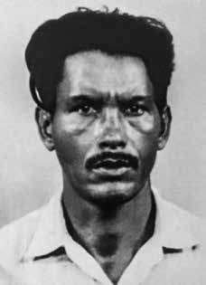

Amaro
Félix
Pereira
CIRCUNSTÂNCIAS DA MORTE
Amaro Félix Pereira teria sido sequestrado, morto e desaparecido entre 1971 e 1972, segundo depoimentos contidos no requerimento encaminhado à Comissão Especial sobre Mortos e Desaparecidos Políticos (CEMDP).
No processo da CEMDP, os familiares não conseguiram apontar com precisão a data do desaparecimento de Amaro, e a CEMDP utilizou a data de 05 de outubro de 1972, para efeitos do cálculo da expectativa de sobrevivência do desaparecido, previsto no art. 11 da Lei 9.140/1995x.
Após a libertação da Casa de Detenção de Recife em 24 de novembro de 1970, sem indicação de quanto tempo depois, Amaro Félix teria sido levado da Usina por quatro policiais armados em uma viatura branca da polícia, depois disso nunca mais foi visto, segundo o requerimento formulado por seus familiares.
Uma versão para a morte e desaparecimento de Amaro, baseada na declaração de Elzir Amorim de Moraes, em 19 de setembro de 2002, no Processo da CEMDP, é de que teria sido vítima dos funcionários da Usina Central de Barreiros. Segundo o depoimento, Amaro “foi barbaramente espancado e morto segundo evidências da época, pelos funcionários da Usina, os quais não podendo serem (sic) identificados por razões obvias. Adiantamos que suas afirmativas de ser perseguido e ameaçado de morte foram objetivadas”.
Por seu turno, declaração prestada por Apolônio Monteiro de Araújo, em 07 de agosto de 2002, incluída no requerimento da família à CEMDP, confirmou as ameaças de morte sofridas por Amaro, que teria lhe revelado “antes de ser morto, que estava sendo perseguido e ameaçado de morte, acusado de exercer atividades subversivas”.
Pedro Bezerra da Silva, trabalhador rural que esteve preso com a vítima, declarou ter informações de que Amaro Félix foi visto pela última vez em um jipe de placa branca, deitado debaixo do banco, já falecido, amarrado por correntes, sendo escoltado por policiais.
Declaração de Elias, o filho mais velho de Amaro, descreveu perseguições e ameaças de morte sofrida por Amaro. Elias declarou também ter sido preso e agredido por policiais e por funcionários da Usina Central de Barreiros. De acordo com ele, a família ouviu relatos de que o corpo de Amaro teria sido jogado dentro da caldeira da usina ou no rio Una, na região de Barreiros em Pernambuco.
Amaro Félix Pereira was allegedly kidnapped, killed and disappeared between 1971 and 1972, according to statements contained in the application sent to the Special Commission on Political Deaths and Disappearances (CEMDP).
In the CEMDP process, the family members were unable to precisely pinpoint the date of Amaro's disappearance, and CEMDP used the date of October 5, 1972, for the purposes of calculating the missing person's expected survival, provided for in art. 11 of Law 9,140/1995x.
After his release from the Recife Detention House on November 24, 1970, with no indication of how long later, Amaro Félix was allegedly taken from the Plant by four armed police officers in a white police vehicle, after which he was never seen again, according to the request made by his family.
One version of Amaro's death and disappearance, based on the statement by Elzir Amorim de Moraes, on September 19, 2002, in the CEMDP Process, is that he was a victim of employees at the Barreiros Central Plant. According to the statement, Amaro "was savagely beaten and killed, according to evidence at the time, by employees of the Plant, who could not be identified for obvious reasons. We say that his claims of being persecuted and threatened with death were objectified."
In turn, a statement made by Apolônio Monteiro de Araújo, on August 7, 2002, included in the family's application to CEMDP, confirmed the death threats suffered by Amaro, who allegedly revealed to him “before he was killed, that he was being persecuted and threatened with death, accused of carrying out subversive activities”.
Pedro Bezerra da Silva, a rural worker who was arrested with the victim, declared that he had information that Amaro Félix was last seen in a jeep with a white license plate, lying under the bench, already deceased, tied by chains, being escorted by police officers.
Statement by Elias, Amaro's eldest son, described persecution and death threats suffered by Amaro. Elias also stated that he was arrested and attacked by police officers and employees of the Barreiros Central Plant. According to him, the family heard reports that Amaro's body had been thrown into the plant's boiler or into the Una River, in the Barreiros region of Pernambuco.
Amaro Félix Pereira fue presuntamente secuestrado, asesinado y desaparecido entre 1971 y 1972, según declaraciones contenidas en la solicitud enviada a la Comisión Especial sobre Muertes y Desapariciones Políticas (CEMDP).
En el proceso del CEMDP, los familiares no lograron precisar con precisión la fecha de la desaparición de Amaro, y el CEMDP utilizó la fecha del 5 de octubre de 1972, para efectos del cálculo de la esperanza de supervivencia del desaparecido, previsto en el art. 11 de la Ley 9.140/1995x.
Luego de su liberación del Centro de Detención de Recife el 24 de noviembre de 1970, sin indicación de cuánto tiempo después, Amaro Félix habría sido sacado de la Planta por cuatro policías armados en un vehículo policial blanco, después de lo cual nunca más fue visto, según pedido de su familia.
Una versión sobre la muerte y desaparición de Amaro, basada en la declaración de Elzir Amorim de Moraes, el 19 de septiembre de 2002, en el Proceso CEMDP, es que fue víctima de empleados de la Planta Central de Barreiros. Según el comunicado, Amaro "fue salvajemente golpeado y asesinado, según testimonios de la época, por empleados de la Planta, quienes no pudieron ser identificados por razones obvias. Decimos que sus denuncias de ser perseguido y amenazado de muerte fueron objetivadas".
A su vez, una declaración de Apolônio Monteiro de Araújo, de 7 de agosto de 2002, incluida en la denuncia de la familia ante el CEMDP, confirmó las amenazas de muerte sufridas por Amaro, quien supuestamente le reveló “antes de ser asesinado, que estaba siendo perseguido y amenazado de muerte, acusado de realizar actividades subversivas”.
Pedro Bezerra da Silva, trabajador rural que fue detenido con la víctima, declaró tener información de que Amaro Félix fue visto por última vez en un jeep con matrícula blanca, tirado debajo de un banco, ya fallecido, atado con cadenas y escoltado por policías.
La declaración de Elías, el hijo mayor de Amaro, describió la persecución y amenazas de muerte que sufrió Amaro. Elías también afirmó que fue detenido y agredido por policías y empleados de la Planta Central de Barreiros. Según él, la familia escuchó informes de que el cuerpo de Amaro había sido arrojado a la caldera de la planta o al río Una, en la región de Barreiros, en Pernambuco.